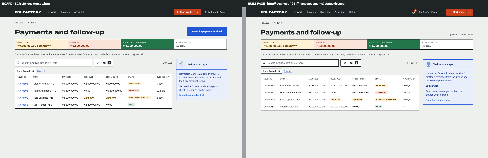
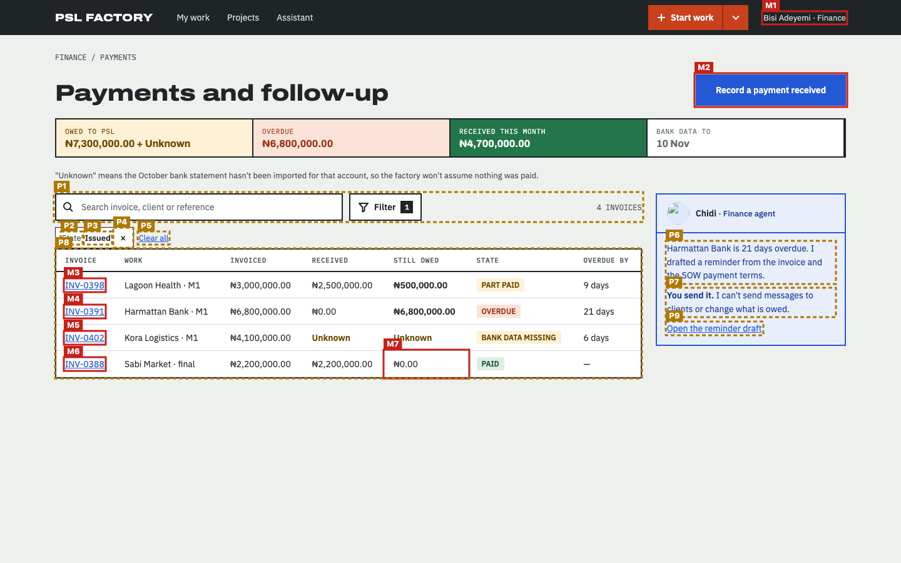
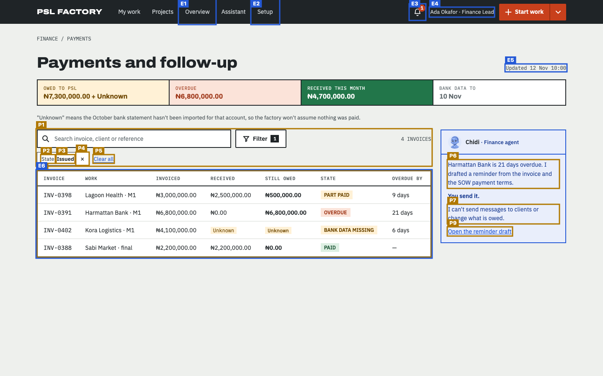
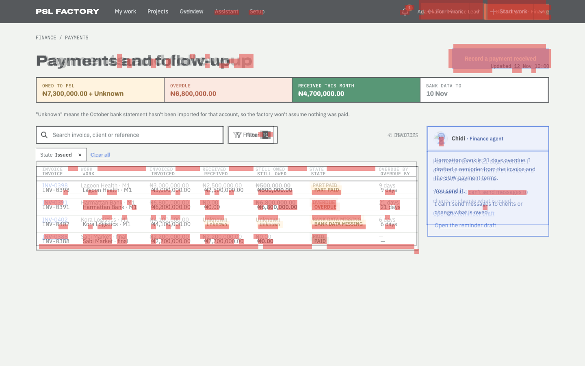

Does the built page follow the design?
Board SCR-20-desktop.dc.html compared with http://localhost:4951/finance/payments?status=issued at 1440px wide · 2026-11-18T08:50:40.157Z
- Every board item is on the page or approved as an exception (100%).
- Visual match 84.5 is below 90.
- 9 item(s) are in a different place; review them (not part of the pass rule unless --strict-position).
56 of 63 things drawn on the board were found on the page: headings, buttons, links, search and filter controls, table columns, labels and the repeated rows (counted once, not per row).
How closely the shapes line up: blocks, bars, tables and text areas, compared in 12px squares over the top 900px. Different words in the same place still count as a match, so sample data does not lower the score.
Missing from the built page 7
Drawn on the board but not found on the page. Each one must be built, or approved as an exception.
| # | What | Text on the board | Where on the board | Exception |
|---|---|---|---|---|
| M1 | Text | Bisi Adeyemi · Finance | right, 20px down | approved Conflicts 14: the signed-in name is the mock's Finance persona (Ada Okafor · Finance Lead), drawn by the shell; the board's sample name is not built. · builder proposal, pending design engineer |
| M2 | Link | Record a payment received | right, 119px down | approved Conflicts 1: recording a payment is held (D-RECEIPT-ALLOCATION open, D14 UNCONFIGURED, FE-PAYMENTS-RECEIPT); the button is not drawn at either width. · builder proposal, pending design engineer |
| M3 | Link | INV-0398 | left, 447px down | approved Conflicts 16: the reference is a link only when the backend sends the row's work_id; the fixtures send none (no invoice work item exists in the mock), so INV-0398 is drawn as plain mono text. · builder proposal, pending design engineer |
| M4 | Link | INV-0391 | left, 489px down | approved Conflicts 16: the reference is a link only when the backend sends the row's work_id; the fixtures send none (no invoice work item exists in the mock), so INV-0391 is drawn as plain mono text. · builder proposal, pending design engineer |
| M5 | Link | INV-0402 | left, 531px down | approved Conflicts 16: the reference is a link only when the backend sends the row's work_id; the fixtures send none (no invoice work item exists in the mock), so INV-0402 is drawn as plain mono text. · builder proposal, pending design engineer |
| M6 | Link | INV-0388 | left, 573px down | approved Conflicts 16: the reference is a link only when the backend sends the row's work_id; the fixtures send none (no invoice work item exists in the mock), so INV-0388 is drawn as plain mono text. · builder proposal, pending design engineer |
| M7 | Text | ₦0.00 | middle, 561px down | approved Conflicts 16: both known zeros are on the page as sent (INV-0391 RECEIVED, INV-0388 STILL OWED, bold like every STILL OWED cell, since the page does not style a cell by its amount); the tool pairs only one of the two equal strings. · builder proposal, pending design engineer |
In a different place 9
Found on both, but in a different order, side of the page, or area (for example inside the table frame instead of above it).
| # | What | How it moved |
|---|---|---|
| P1 | Search area |
|
| P2 | Text State |
|
| P3 | Text Issued |
|
| P4 | Filter Remove State filter |
|
| P5 | Link Clear all |
|
| P6 | Text Harmattan Bank is 21 days overdue. I drafted a reminder from the invoice and the SOW payment terms. |
|
| P7 | Text You send it. I can't send messages to clients or change what is owed. |
|
| P8 | Table |
|
| P9 | Link Open the reminder draft |
|
Looks different 6
Found on both, but styled differently: table rows and cells, fonts, colours, underlines, outlines, corners. Not part of the score; check each one against the board.
| What | Difference |
|---|---|
| Link "Start work" |
|
| Link "More ways to start" |
|
| Text "RECEIVED THIS MONTH" |
|
| Search box "Search" |
|
| Filter "Remove State filter" |
|
| Link "Clear all" |
|
On the page but not on the board 6
Built but not drawn. Some are expected (data, status lines); the rest need the design engineer to approve or remove them.
| # | What | Text on the page | Where on the page |
|---|---|---|---|
| E1 | Link | Overview | left, 0px down |
| E2 | Link | Setup | middle, 0px down |
| E3 | Button | Alerts, 1 unread | right, 11px down |
| E4 | Text | Ada Okafor · Finance Lead | right, 19px down |
| E5 | Text | Updated 12 Nov 10:00 | right, 155px down |
| E6 | Section | Invoices | middle, 408px down |
Pictures
The red dashed line on the side-by-side marks how far down the visual score looks. On the marked board, red boxes are missing items (M). On the marked page, amber boxes moved (P) and blue boxes are extra (E). In the difference picture both screens are laid over each other and red squares are where the shapes do not line up.






Notes about this run
- Images: /_blob/ images are served from /Users/Hunchoo/psl-factory-worktrees/f-41/design/mascots/canvas-assets.json (19 mapped).
- Images: 1 /_blob/ image(s) could not be shown because they are not in the assets map: /_blob/4ac9ee52f6c83d9cdc4f91e694a3a025. They render as broken images and lower the visual score.
Found on both (56)
| Navigation area | Main | |
| Text | PSL FACTORY | |
| Link | My work | |
| Link | Projects | |
| Link | Assistant | |
| Link | Start work | |
| Link | More ways to start | |
| Main area | ||
| Text | FINANCE / PAYMENTS | |
| Heading | Payments and follow-up | |
| Text | OWED TO PSL | |
| Text | ₦7,300,000.00 + Unknown | |
| Text | OVERDUE | |
| Text | ₦6,800,000.00 | |
| Text | RECEIVED THIS MONTH | page: RECEIVED THIS MONTH (November 2026) |
| Text | ₦4,700,000.00 | |
| Text | BANK DATA TO | |
| Text | 10 Nov | |
| Text | "Unknown" means the October bank statement hasn't been imported for that account, so the factory won't assume nothing was paid. | |
| Search area | ||
| Search box | Search | |
| Filter | Filter 1 | page: Filter 1 on |
| Text | 4 INVOICES | |
| Text | State | |
| Text | Issued | |
| Filter | Remove State filter | |
| Link | Clear all | |
| Table | page: Invoices | |
| Table column | INVOICE | |
| Table column | WORK | |
| Table column | INVOICED | |
| Table column | RECEIVED | |
| Table column | STILL OWED | |
| Table column | STATE | |
| Table column | OVERDUE BY | |
| Text | Lagoon Health · M1 | |
| Text | ₦3,000,000.00 | |
| Text | ₦2,500,000.00 | |
| Text | 9 days | |
| Text | Harmattan Bank · M1 | |
| Text | ₦6,800,000.00 | |
| Text | ₦0.00 | |
| Text | 21 days | |
| Text | Kora Logistics · M1 | |
| Text | ₦4,100,000.00 | |
| Text | 6 days | |
| Text | Sabi Market · final | |
| Text | ₦2,200,000.00 | |
| Text | ₦2,200,000.00 | |
| Text | — | |
| Side panel | page: Chidi · Finance agent | |
| Text | Chidi · Finance agent | |
| Text | · Finance agent | |
| Text | Harmattan Bank is 21 days overdue. I drafted a reminder from the invoice and the SOW payment terms. | |
| Text | You send it. I can't send messages to clients or change what is owed. | page: I can't send messages to clients or change what is owed. |
| Link | Open the reminder draft |
How the scores are worked out
Element coverage. The board is drawn locally from its own template and sample data. From the drawn board the check lists everything a person sees or uses: page areas (navigation, main, search), headings, links, buttons, form fields with their labels, table column headers, filter, search and pagination controls and fixed labels. Rows drawn from sample data count once, as a pattern ("table rows with these columns"). Each item is looked for on the page by its kind and its words (ignoring capitals, curly quotes and small wording differences, at least 80% similar). Coverage is found ÷ drawn. Order is compared in reading order (top to bottom, left to right); an item is "moved" when it breaks the order, sits on the other side of the page, or sits inside a different area.
Visual match. Both full-page screenshots are compared in 12px squares after a light blur, over the board's height (900px; the page is 900px). Only squares with something in them count. A square matches when its colours line up, or when both have text or lines there. Score = matching ÷ counted squares (3297 of 3901). Over every square including empty background it would be 93.3.
Technical details
Board file: /Users/Hunchoo/psl-factory-worktrees/f-41/design/canvas/finance/project/SCR-20-desktop.dc.html
Viewport: 1440×900
Report data: report.json
Exceptions file: /Users/Hunchoo/psl-factory/delivery/features/F-41/fidelity-exceptions.json